Bientôt sur Google Play
Le lecteur IPTVconçu pour vous, 100 % gratuit.
Playlists M3U, comptes Xtream, direct, guide TV, films et séries. Sans abonnement, sans Premium, sans publicité.
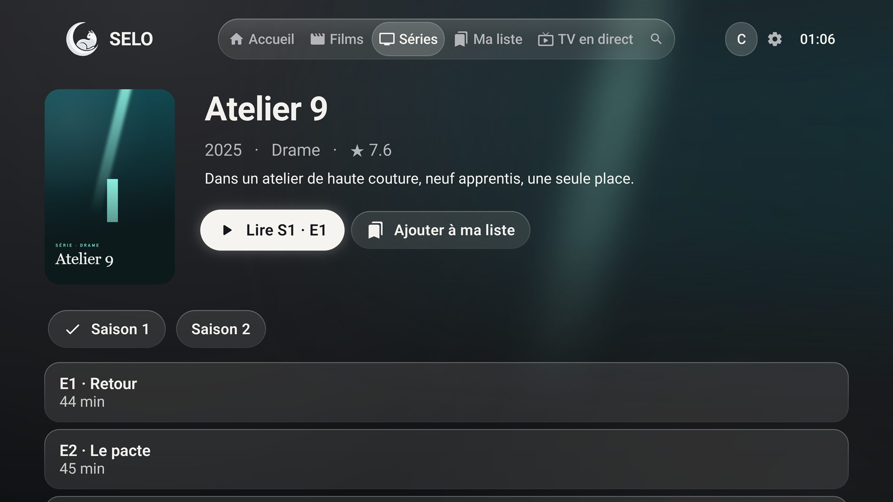
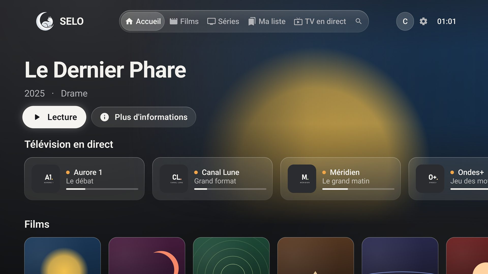
Le prix de Selo. Pour tout le monde.
Vraiment gratuit.
Pas de version d’essai, pas de fonctions réservées. Tout ce que Selo sait faire est inclus, pour tout le monde.
| L’application | 0 € |
|---|---|
| Abonnement Selo | Aucun |
| Version Premium | N’existe pas |
| Achats intégrés | Aucun |
| Publicité | Aucune |
| Compte à créer | Aucun |
| Total | 0 € |
Selo est un lecteur : il ne vend ni ne fournit aucune chaîne. Vous l’utilisez avec vos propres sources.
La visite, écran par écran.
Faites défiler : Selo change d’écran comme à la télécommande.
Passez aux affiches : le panneau des catégories se replie de lui-même en icônes.
Des affiches grand format, et un focus qui se voit tout de suite depuis le canapé.
Résumé, distribution, reprise de lecture, et ce que Selo a réellement mesuré à la lecture.
Plein écran, sans fioritures : 10 secondes en arrière ou en avant, audio et sous-titres à une touche.
Mémoire tampon et fréquence d’image automatique, expliquées en clair.
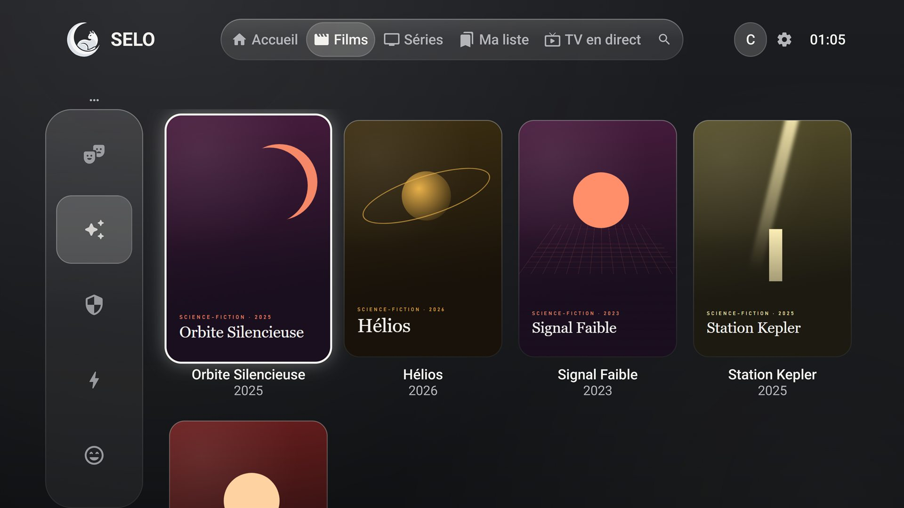
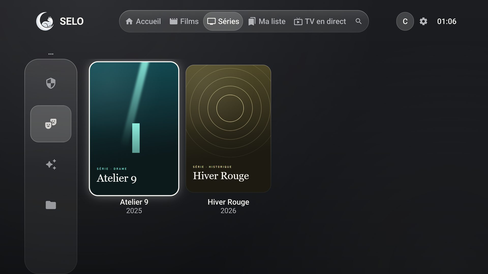
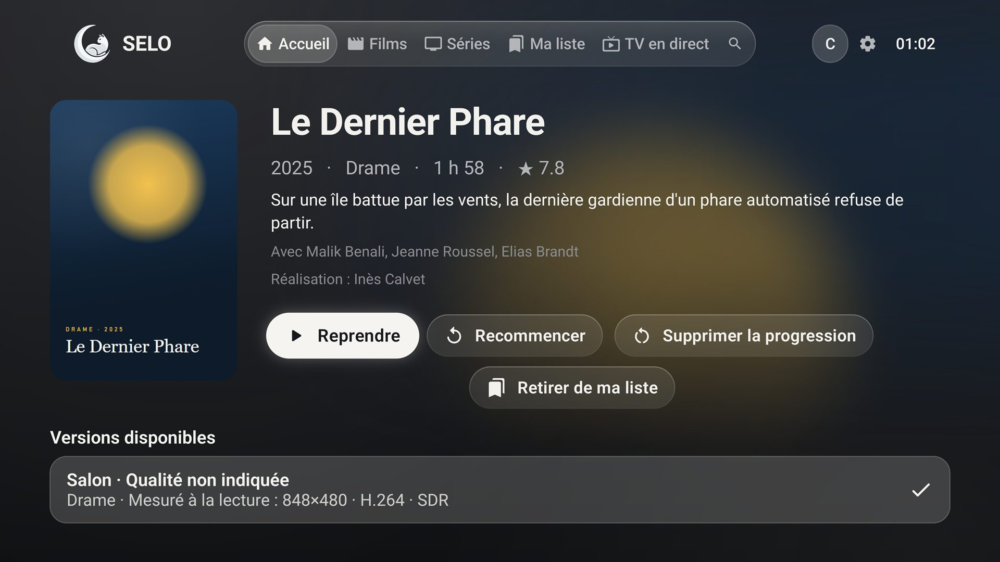
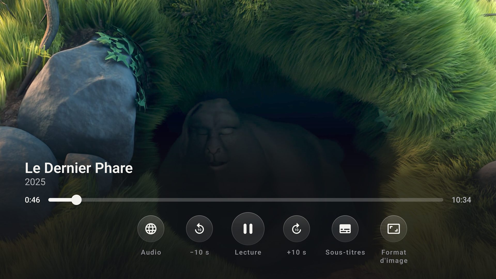
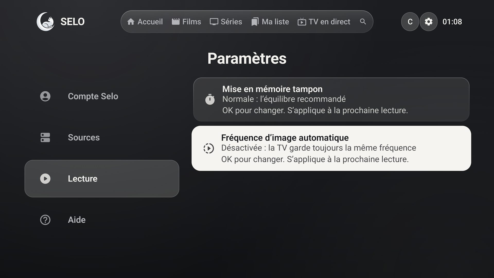
Le direct, et ce qui vient ensuite.
Sur chaque chaîne, le programme en cours, sa progression et la suite, grâce au guide XMLTV de votre fournisseur. Zappez sans quitter l’image.
- SD, HD et 4K réunies en une seule chaîne
- Catégories rangées par pays et par langue
- Chaînes favorites en tête de liste
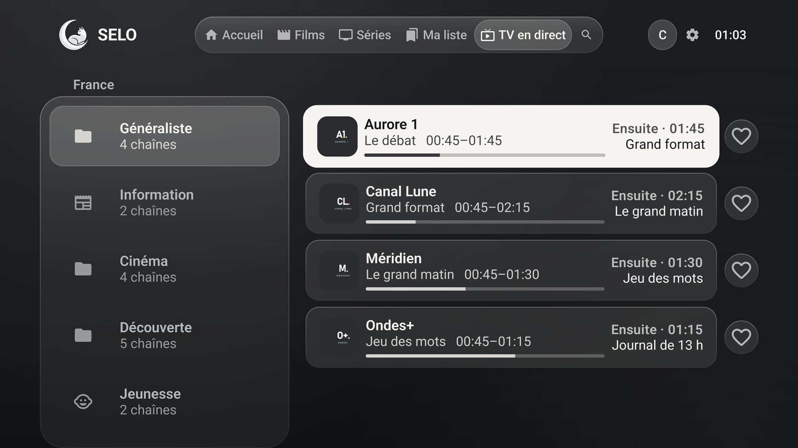
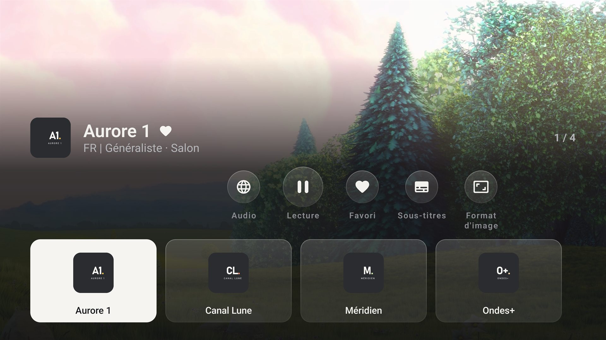
Films et séries, rangés comme une vidéothèque.
Affiches, fiches, saisons et épisodes, tels que votre source les fournit. Les copies d’un même film se retrouvent sur une seule fiche.
- Saisons et épisodes
- « Ma liste »
- Reprise de lecture
- Titres en cours dans « Continuer à regarder » de Google TV
- Choix de la version et de la qualité
- Selo apprend ce que vous aimez regarder et vous recommande chaque jour des films et des séries faits pour vous, sans que rien ne quitte votre TV.
- 4K, HEVC et AV1, HDR10, HDR10+, Dolby Vision et HLG, Dolby Digital, Dolby Digital Plus et Dolby Atmos : transmis tels quels à votre TV, dans la limite de ce qu’elle sait lire
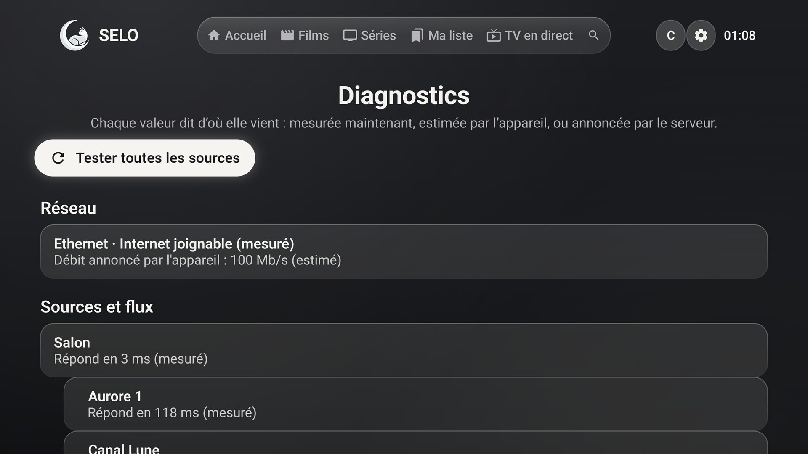
Un diagnostic qui ne bluffe pas.
Réseau, sources, flux, erreurs de lecture : chaque valeur dit d’où elle vient. Jamais une estimation déguisée en mesure.
- MesuréSelo l’a vérifié lui-même, maintenant.
- EstiméUne valeur donnée par l’appareil.
- AnnoncéCe que déclare le serveur ou le flux.
Toute la maison, chacun chez soi.
Un profil, c’est ses favoris, sa liste, ses lectures en cours et son propre algorithme de recommandation.
Trois étapes, et c’est prêt.
Selo ne contient aucune chaîne : vous lui donnez la source que vous utilisez déjà.
-
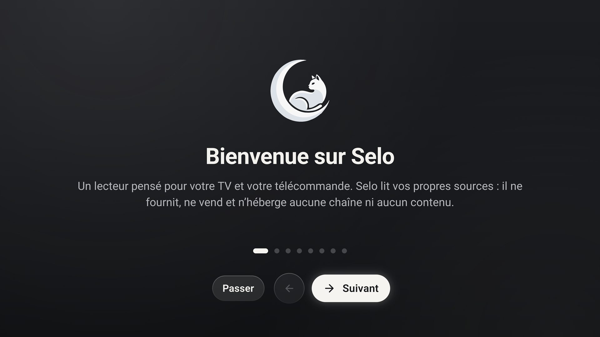
Étape 1 : Installez Selo
Gratuitement, depuis Google Play, dès sa sortie.
-
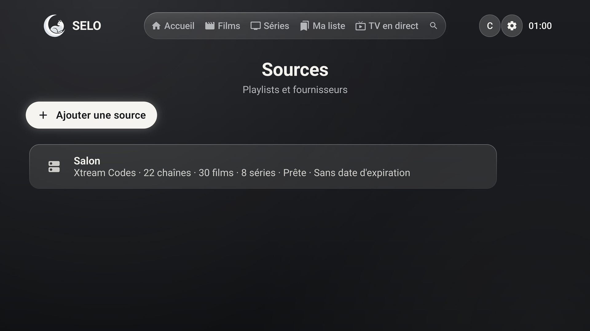
Étape 2 : Ajoutez votre source
Une playlist M3U par adresse ou par fichier, ou un compte Xtream Codes.
-
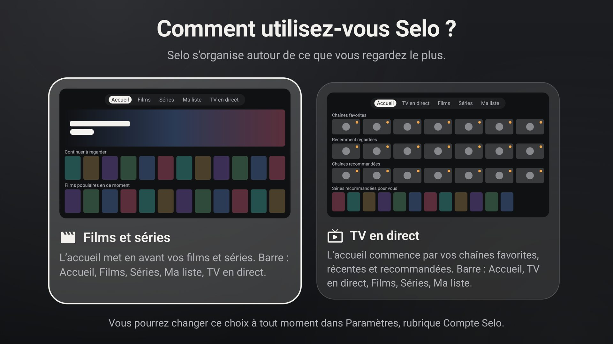
Étape 3 : Dites ce que vous regardez
Films et séries, ou TV en direct : l’accueil s’organise autour de votre choix.
Et tout le reste, déjà là.
- Playlists M3U et M3U8
- Par adresse ou par fichier
- Comptes Xtream Codes
- Plusieurs sources
- Une source préférée
- Plus de 100 000 entrées
- Actualisation automatique
- Doublons regroupés
- Guide TV XMLTV
- Adresse, fichier .xml ou .gz, compte Xtream
- Recherche des chaînes, films et séries
- Pistes audio et sous-titres
- Format d’image
- Fréquence d’image automatique
- Mémoire tampon réglable
- Catégories masquées ou réordonnées
- Contrôle parental
- Question posée avant tout contenu adulte
Pensé pour le canapé.
Cinq touches suffisent.
Haut, bas, gauche, droite, OK. Le focus se voit toujours, et la saisie de texte est réduite au strict minimum.
Rien ne quitte votre TV.
Pas de compte, pas de cloud. Vos identifiants sont chiffrés sur l’appareil, et vos mots de passe n’apparaissent jamais en clair.
http://fournisseur.exemple:8080/live/••••••/••••••/1042.ts
Une actualisation qui ne casse rien.
Si le serveur tombe pendant la mise à jour, votre liste précédente reste intacte, avec vos favoris et vos reprises.
Un lecteur, rien d’autre.
Selo n’héberge, ne vend et ne fournit aucun contenu. Il lit les sources auxquelles vous avez accès, et seulement celles-là.
Vos questions, nos réponses.
Selo n’est pas encore sorti : ces réponses décrivent la version actuelle de l’application.
Selo est-il vraiment gratuit ?
Oui. Pas d’abonnement, pas de version Premium, pas d’achat intégré, pas de publicité. Toutes les fonctionnalités sont incluses pour tout le monde.
Selo fournit-il des chaînes, des films ou des séries ?
Non. Selo est uniquement un lecteur. Il n’héberge, ne vend et ne fournit aucun contenu : vous l’utilisez avec vos propres sources, celles auxquelles vous avez déjà accès.
Quand pourrai-je l’installer ?
Selo arrive bientôt sur Google Play. Aucune date n’est encore annoncée.
Sur quels appareils fonctionne-t-il ?
Sur les téléviseurs et boîtiers Android TV et Google TV, à partir d’Android 9. Selo se pilote entièrement à la télécommande.
Fire TV n’est pas pris en charge pour le moment.
Quelles sources puis-je ajouter ?
Des playlists M3U ou M3U8, par adresse ou par fichier, et des comptes Xtream Codes. Vous pouvez en ajouter plusieurs. Le guide TV se lit au format XMLTV, par adresse, par fichier .xml ou .gz, ou depuis votre compte Xtream.
Faut-il créer un compte ?
Non. Tout est stocké sur votre téléviseur. Vos identifiants y sont chiffrés et ne sont envoyés à aucun serveur de Selo.
Peut-on l’utiliser en famille ?
Oui : jusqu’à 5 profils, chacun avec ses favoris, sa liste, ses lectures en cours et son propre algorithme de recommandation, dont des profils enfant. Un code parental à 4 chiffres protège les catégories que vous verrouillez et l’accès aux paramètres.
Ma liste est énorme. Selo va-t-il suivre ?
Selo est conçu pour les listes de plus de 100 000 entrées. Les doublons sont réunis, et vous ne chargez que les langues qui vous intéressent.
Que se passe-t-il si mon fournisseur ne répond plus ?
Votre liste précédente est conservée telle quelle, avec vos favoris et vos reprises. Le diagnostic vous dit ce qui ne répond pas, avec des messages en clair.
Selo arrive bientôt sur Google Play.
100 % gratuit, pour Android TV et Google TV. En attendant, refaites la visite.